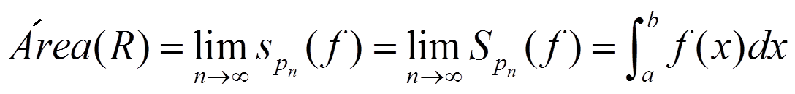

Vamos a calcular el área bajo la gráfica de una función en un intervalo, el área de R.

Para hacerlo hacemos una partición, Pn, del intervalo [a,b] en n subintervalos:
a = x0<x1<x2<……<xn = b
Entonces tenemos dos opciones para calcular el área:
•La suma inferior de f asociada a la partición Pn: sPn(f)

•La suma superior de f asociada a la partición Pn: SPn(f)

Obviamente: sPn(f)≤ área (R) ≤ SPn(f)
Si elegimos otra partición, Pn’, n’ > n, entonces:


sPn(f)≤ sPn’(f)≤ área (R) ≤ SPn’(f) ≤ SPn(f)
Si hacemos los límites cuando n tiende a ∞ y son iguales, entonces:

y se llama integral definida de f entre a y b, y se dice que f es integrable en [a,b]